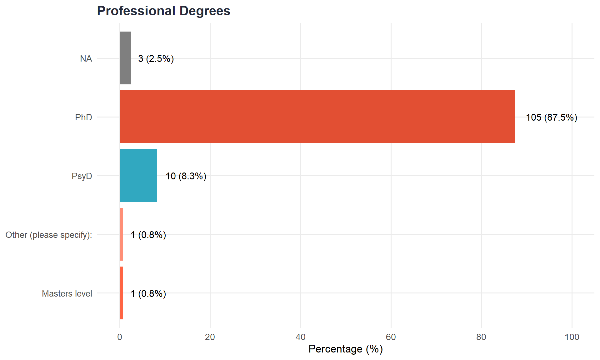
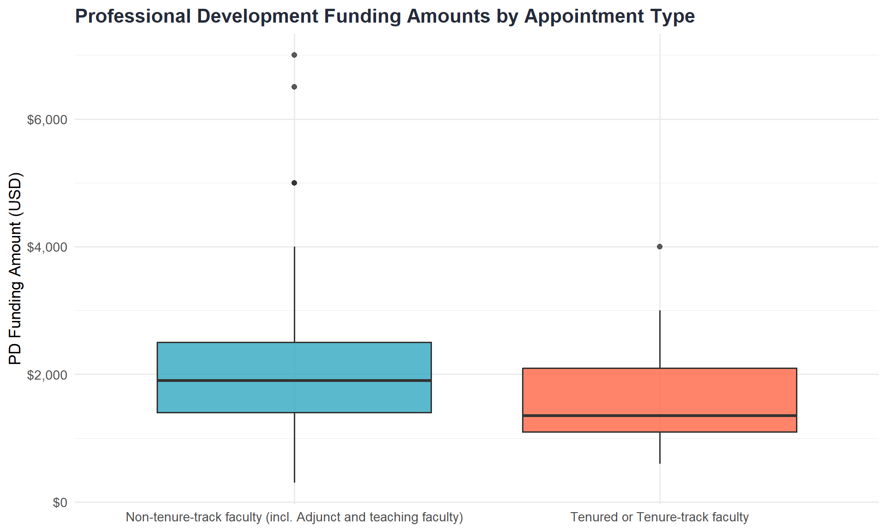
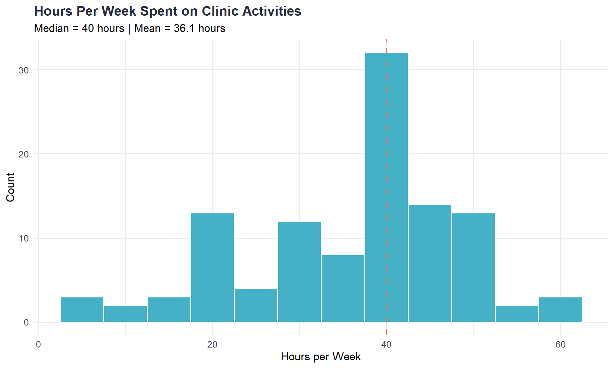
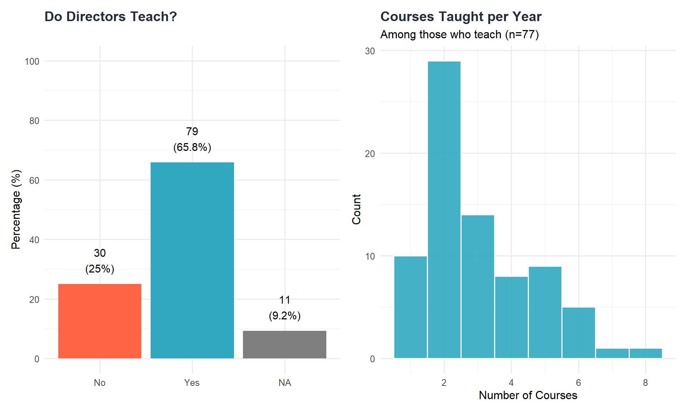
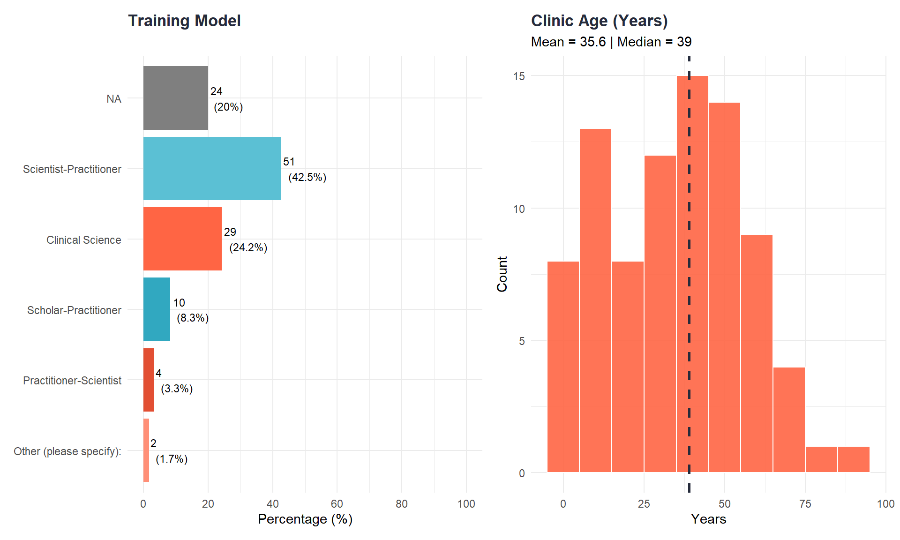
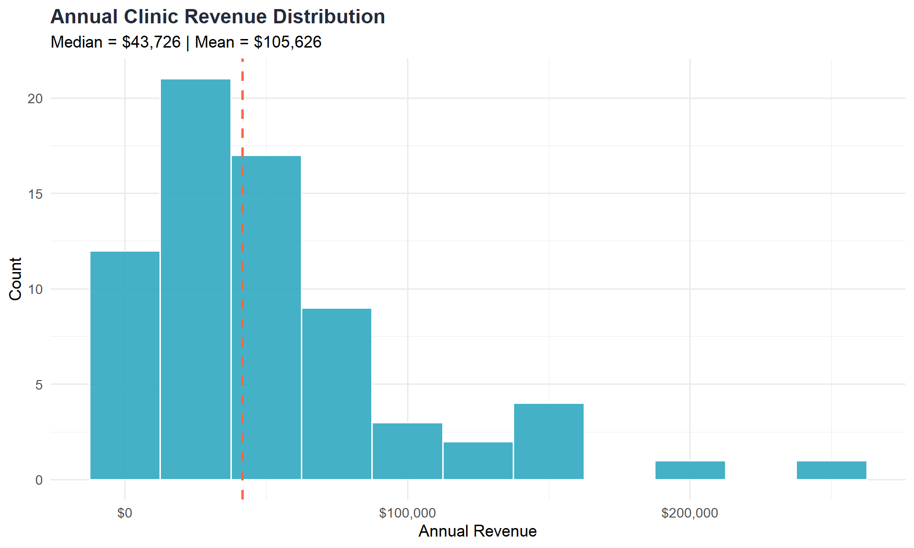
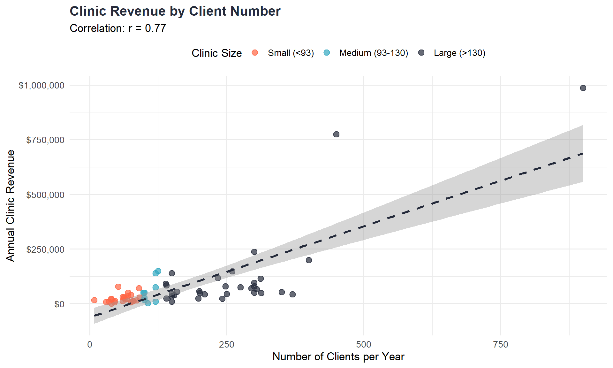
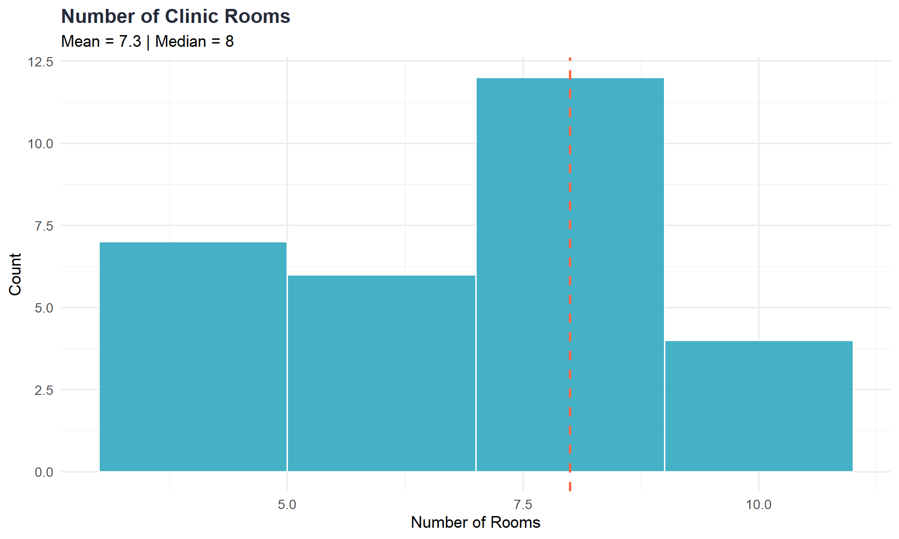
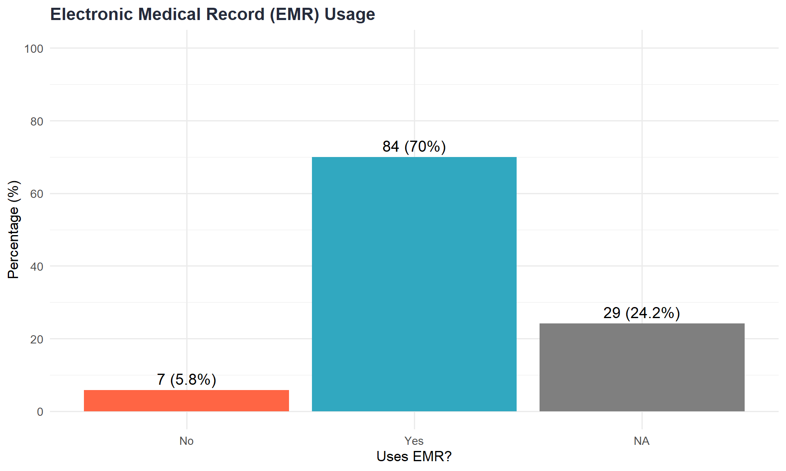
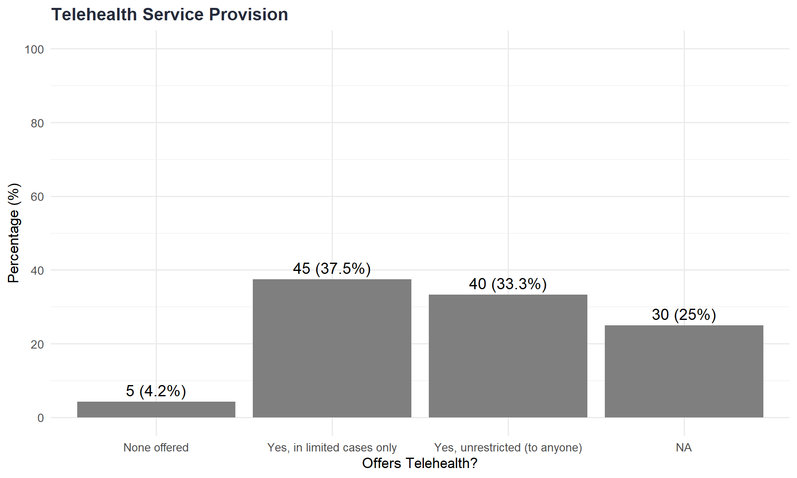

Code
library(readxl)
library(tidyverse)
library(freqtables)
library(skimr)
library(scales)
library(gt)
library(knitr)
library(kableExtra)
library(patchwork)
library(viridis)library(readxl)
library(tidyverse)
library(freqtables)
library(skimr)
library(scales)
library(gt)
library(knitr)
library(kableExtra)
library(patchwork)
library(viridis)library(readxl)
dat <- read_excel("dat.xlsx")
dat <- dat[-1, ]
library(dplyr)
library(stringr)
dat <- dat %>%
mutate(
across(where(is.numeric), ~ na_if(., -99)),
across(where(is.character), ~ na_if(., "-99")),
across(where(is.character), str_trim)
)
# -----------------------------
# GLOBAL DATA CLEANING (FIXED)
# -----------------------------
dat <- dat %>%
# 1. Replace -99 with NA in numeric columns
mutate(
across(
where(is.numeric),
~ na_if(., -99)
)
) %>%
# 2. Replace "-99" with NA in character columns
mutate(
across(
where(is.character),
~ na_if(., "-99")
)
) %>%
# 3. Remove question text accidentally stored as values
mutate(
across(
where(is.character),
~ if_else(
str_detect(
.,
regex(
"(\\?$)|(^what is )|(^last )|(^during )|(^in the last )",
ignore_case = TRUE
)
),
NA_character_,
.
)
)
) %>%
# 4. Trim whitespace
mutate(
across(where(is.character), str_trim)
) %>%
# 5. Normalize binary variables
mutate(
across(
matches("Binary$"),
~ case_when(
str_detect(., regex("^yes$", ignore_case = TRUE)) ~ "Yes",
str_detect(., regex("^no$", ignore_case = TRUE)) ~ "No",
TRUE ~ NA_character_
)
)
) %>%
# 6. Preserve your explicit numeric coercions
mutate(
Progress = as.numeric(Progress),
Duration = as.numeric(`Duration (in seconds)`),
GrossSalary = as.numeric(GrossSalary),
FTESalary = as.numeric(FTESalary),
RoleDuration = as.numeric(RoleDuration),
ClinicDuration = as.numeric(ClinicDuration),
ClinicAge = as.numeric(ClinicAge),
HoursWorkClinic = as.numeric(HoursWorkClinic),
CoursesTaught = as.numeric(CoursesTaught),
CourseCreditHours = as.numeric(CourseCreditHours),
ClinicTotalTrainees = as.numeric(ClinicTotalTrainees),
ClinicClientsCount = as.numeric(ClinicClientsCount),
NumRooms = as.numeric(NumRooms),
ClinSqFt = as.numeric(ClinSqFt),
SupTraineeCount = as.numeric(SupTraineeCount),
MaxTraineeCount = as.numeric(MaxTraineeCount),
HoursSupTherapy = as.numeric(HoursSupTherapy),
HoursSupAssmnt = as.numeric(HoursSupAssmnt),
HoursSupSup = as.numeric(HoursSupSup),
HoursWatching = as.numeric(HoursWatching),
HoursReviewingDoc = as.numeric(HoursReviewingDoc),
MaxTraineesTherapy = as.numeric(MaxTraineesTherapy),
MaxTraineesAssmnt = as.numeric(MaxTraineesAssmnt),
TxLength = as.numeric(TxLength),
MaxTxCasesAllow = as.numeric(MaxTxCasesAllow),
MaxAxCasesAllow = as.numeric(MaxAxCasesAllow),
ClinicRevenue = as.numeric(ClinicRevenue),
ClinicTxRevenue = as.numeric(ClinicTxRevenue),
ClinicAxRevenue = as.numeric(ClinicAxRevenue),
Burnout_1 = as.numeric(Burnout_1),
Burnout_2 = as.numeric(Burnout_2),
Burnout_3 = as.numeric(Burnout_3),
Burnout_4 = as.numeric(Burnout_4),
Burnout_5 = as.numeric(Burnout_5)
)
# Display sample info
cat("Total respondents:", nrow(dat), "\n")Total respondents: 120 cat("Number of variables:", ncol(dat), "\n")Number of variables: 529 # Function to handle NA as empty string
nz <- function(x) ifelse(is.na(x), "", x)
# Functions to identify tenure-track status
is_ntt <- function(x) {
s <- nz(x)
str_detect(s, regex("\\bnon[- ]?tenure\\b", ignore_case = TRUE)) |
str_detect(s, regex("\\b(adjunct|lecturer|teaching|clinical)\\b", ignore_case = TRUE))
}
is_tt <- function(x) {
s <- nz(x)
str_detect(s, regex("\\b(tenured|tenure[- ]?track)\\b", ignore_case = TRUE)) &
!is_ntt(x)
}
# Prepare salary data
dat_simple <- dat %>%
mutate(
# Parse salary
GrossSalary = parse_number(as.character(GrossSalary)),
GrossSalary = ifelse(is.na(GrossSalary) | GrossSalary <= 0, NA_real_, GrossSalary),
# FT/PT
FullPart = case_when(
str_detect(nz(FullPart), regex("part", ignore_case = TRUE)) ~ "Part-time",
str_detect(nz(FullPart), regex("full", ignore_case = TRUE)) ~ "Full-time",
TRUE ~ NA_character_
),
# Rank groups
RankGrp = case_when(
str_detect(nz(Rank), regex("^Assistant", ignore_case = TRUE)) ~ "Assistant Professor",
str_detect(nz(Rank), regex("^Associate", ignore_case = TRUE)) ~ "Associate Professor",
str_detect(nz(Rank), regex("^Full", ignore_case = TRUE)) ~ "Full Professor",
str_detect(nz(RoleTitle), regex("lecturer", ignore_case = TRUE)) |
str_detect(nz(PositionType), regex("lecturer", ignore_case = TRUE)) ~ "Lecturer",
str_detect(nz(RoleTitle), regex("staff", ignore_case = TRUE)) ~ "Staff (N/A)",
!is.na(Rank) ~ "Other (specified)",
TRUE ~ "Unspecified Rank"
),
RankGrp = factor(
RankGrp,
levels = c("Assistant Professor", "Associate Professor", "Full Professor",
"Lecturer", "Staff (N/A)", "Other (specified)", "Unspecified Rank")
)
)# Sample size verification
sample_summary <- data.frame(
Metric = c("Total Responses", "Finished Responses", "Progress = 100%",
"Final Analytic Sample"),
Count = c(
nrow(read_excel("dat.xlsx")),
sum(dat$Finished == "True", na.rm = TRUE),
sum(dat$Progress == 100, na.rm = TRUE),
nrow(dat)
)
)
sample_summary %>%
kable(caption = "Sample Size Verification") %>%
kable_styling(bootstrap_options = c("striped", "hover"))| Metric | Count |
|---|---|
| Total Responses | 121 |
| Finished Responses | 84 |
| Progress = 100% | 84 |
| Final Analytic Sample | 120 |
# Check key categorical variables
cat("\n=== Membership Status ===\n")
=== Membership Status ===print(table(dat$MemStatus, useNA = "always"))
Associate Member International Affiliate Member
6 1 111
<NA>
2 cat("\n=== Professional Degree ===\n")
=== Professional Degree ===print(table(dat$ProfDeg, useNA = "always"))
Masters level Other (please specify): PhD
1 1 105
PsyD <NA>
10 3 cat("\n=== Teaching Binary ===\n")
=== Teaching Binary ===print(table(dat$TeachingBinary, useNA = "always"))
No Yes <NA>
30 79 11 cat("\n=== EMR Binary ===\n")
=== EMR Binary ===print(table(dat$EMRbinary, useNA = "always"))
No Yes <NA>
7 84 29 cat("\n=== Position Type (first 5 unique values) ===\n")
=== Position Type (first 5 unique values) ===print(head(sort(table(dat$PositionType, useNA = "always"), decreasing = TRUE), 5))
Non-tenure-track faculty (incl. Adjunct and teaching faculty)
80
Administrative or Staff position
19
Tenured or Tenure-track faculty
14
<NA>
4
Other (please specify):
3 # Calculate missing data for key variables
key_vars <- c(
"GrossSalary", "FTESalary", "RoleDuration", "ClinicDuration",
"Rank", "PositionType", "FullPart", "ContractLength",
"TeachingBinary", "CoursesTaught",
"ClinicAge", "ClinicTrainingModel", "ClinicTotalTrainees", "ClinicClientsCount",
"ClinicRevenue", "ClinicSlidingScale",
"EMRbinary", "Telehealth", "ResearchActive",
"Burnout_1", "MaxTraineeCount"
)
missing_summary <- dat %>%
select(any_of(key_vars)) %>%
summarise(across(everything(), ~sum(is.na(.)))) %>%
pivot_longer(everything(), names_to = "Variable", values_to = "Missing_Count") %>%
mutate(
Total = nrow(dat),
Percent_Missing = round(100 * Missing_Count / Total, 1),
Percent_Complete = 100 - Percent_Missing
) %>%
arrange(desc(Percent_Missing))
missing_summary %>%
filter(Missing_Count > 0) %>%
kable(caption = "Missing Data Summary (Variables with Any Missing Data)") %>%
kable_styling(bootstrap_options = c("striped", "hover"))| Variable | Missing_Count | Total | Percent_Missing | Percent_Complete |
|---|---|---|---|---|
| ClinicRevenue | 46 | 120 | 38.3 | 61.7 |
| CoursesTaught | 43 | 120 | 35.8 | 64.2 |
| ClinicClientsCount | 36 | 120 | 30.0 | 70.0 |
| ClinicAge | 35 | 120 | 29.2 | 70.8 |
| ClinicSlidingScale | 35 | 120 | 29.2 | 70.8 |
| MaxTraineeCount | 32 | 120 | 26.7 | 73.3 |
| Telehealth | 30 | 120 | 25.0 | 75.0 |
| EMRbinary | 29 | 120 | 24.2 | 75.8 |
| ResearchActive | 29 | 120 | 24.2 | 75.8 |
| ClinicTotalTrainees | 27 | 120 | 22.5 | 77.5 |
| Rank | 26 | 120 | 21.7 | 78.3 |
| ClinicTrainingModel | 24 | 120 | 20.0 | 80.0 |
| Burnout_1 | 20 | 120 | 16.7 | 83.3 |
| RoleDuration | 16 | 120 | 13.3 | 86.7 |
| ClinicDuration | 12 | 120 | 10.0 | 90.0 |
| GrossSalary | 11 | 120 | 9.2 | 90.8 |
| FTESalary | 11 | 120 | 9.2 | 90.8 |
| TeachingBinary | 11 | 120 | 9.2 | 90.8 |
| PositionType | 4 | 120 | 3.3 | 96.7 |
| FullPart | 4 | 120 | 3.3 | 96.7 |
| ContractLength | 4 | 120 | 3.3 | 96.7 |
# Flag high missing rates
high_missing <- missing_summary %>%
filter(Percent_Missing > 20)
if (nrow(high_missing) > 0) {
cat("\n⚠️ WARNING: The following variables have >20% missing data:\n")
print(high_missing %>% select(Variable, Percent_Missing))
}
⚠️ WARNING: The following variables have >20% missing data:
# A tibble: 11 × 2
Variable Percent_Missing
<chr> <dbl>
1 ClinicRevenue 38.3
2 CoursesTaught 35.8
3 ClinicClientsCount 30
4 ClinicAge 29.2
5 ClinicSlidingScale 29.2
6 MaxTraineeCount 26.7
7 Telehealth 25
8 EMRbinary 24.2
9 ResearchActive 24.2
10 ClinicTotalTrainees 22.5
11 Rank 21.7# Salary checks
salary_checks <- dat %>%
filter(!is.na(GrossSalary)) %>%
summarise(
N = n(),
Min = min(GrossSalary),
Q1 = quantile(GrossSalary, 0.25),
Median = median(GrossSalary),
Mean = mean(GrossSalary),
Q3 = quantile(GrossSalary, 0.75),
Max = max(GrossSalary),
N_Below_30K = sum(GrossSalary < 30000),
N_Above_200K = sum(GrossSalary > 200000)
)
salary_checks %>%
mutate(across(c(Min, Q1, Median, Mean, Q3, Max), ~dollar(.))) %>%
kable(caption = "Salary Data Quality Check") %>%
kable_styling(bootstrap_options = c("striped", "hover"))| N | Min | Q1 | Median | Mean | Q3 | Max | N_Below_30K | N_Above_200K |
|---|---|---|---|---|---|---|---|---|
| 109 | $11,000 | $90,000 | $104,000 | $106,412 | $120,000 | $210,000 | 2 | 1 |
if (salary_checks$N_Below_30K > 0) {
cat("\n⚠️ NOTE:", salary_checks$N_Below_30K, "salaries are below $30,000. Please verify these are accurate.\n")
}
⚠️ NOTE: 2 salaries are below $30,000. Please verify these are accurate.if (salary_checks$N_Above_200K > 0) {
cat("\n⚠️ NOTE:", salary_checks$N_Above_200K, "salaries are above $200,000. Please verify these are accurate.\n")
}
⚠️ NOTE: 1 salaries are above $200,000. Please verify these are accurate.# Revenue checks
revenue_checks <- dat %>%
filter(!is.na(ClinicRevenue), ClinicRevenue > 0) %>%
summarise(
N = n(),
Min = min(ClinicRevenue),
Q1 = quantile(ClinicRevenue, 0.25),
Median = median(ClinicRevenue),
Mean = mean(ClinicRevenue),
Q3 = quantile(ClinicRevenue, 0.75),
Max = max(ClinicRevenue),
N_Above_500K = sum(ClinicRevenue > 500000),
N_Above_1M = sum(ClinicRevenue > 1000000)
)
revenue_checks %>%
mutate(across(c(Min, Q1, Median, Mean, Q3, Max), ~dollar(.))) %>%
kable(caption = "Revenue Data Quality Check") %>%
kable_styling(bootstrap_options = c("striped", "hover"))| N | Min | Q1 | Median | Mean | Q3 | Max | N_Above_500K | N_Above_1M |
|---|---|---|---|---|---|---|---|---|
| 74 | $1,000 | $20,500 | $43,726 | $105,626 | $77,625 | $1,200,000 | 4 | 2 |
if (revenue_checks$N_Above_1M > 0) {
cat("\n⚠️ NOTE:", revenue_checks$N_Above_1M, "clinics report revenue above $1,000,000.\n")
cat("These are excluded from some visualizations. Consider if these are accurate or should be included.\n")
}
⚠️ NOTE: 2 clinics report revenue above $1,000,000.
These are excluded from some visualizations. Consider if these are accurate or should be included.# Check tenure track classification
tenure_check <- dat %>%
filter(!is.na(PositionType)) %>%
mutate(
TT = is_tt(PositionType),
NTT = is_ntt(PositionType),
Classification = case_when(
TT & NTT ~ "CONFLICT (Both TT and NTT)",
TT ~ "Tenure-Track/Tenured",
NTT ~ "Non-Tenure-Track",
TRUE ~ "Unclassified"
)
) %>%
count(Classification, PositionType) %>%
arrange(Classification, desc(n))
tenure_check %>%
kable(caption = "Tenure Track Classification Check") %>%
kable_styling(bootstrap_options = c("striped", "hover"))| Classification | PositionType | n |
|---|---|---|
| Non-Tenure-Track | Non-tenure-track faculty (incl. Adjunct and teaching faculty) | 80 |
| Tenure-Track/Tenured | Tenured or Tenure-track faculty | 14 |
| Unclassified | Administrative or Staff position | 19 |
| Unclassified | Other (please specify): | 3 |
# Flag any conflicts
conflicts <- tenure_check %>%
filter(str_detect(Classification, "CONFLICT"))
if (nrow(conflicts) > 0) {
cat("\n🚨 ERROR: Some positions are classified as BOTH TT and NTT!\n")
cat("This should not happen. Check the classification logic.\n")
}
# Show unclassified
unclassified <- tenure_check %>%
filter(Classification == "Unclassified")
if (nrow(unclassified) > 0) {
cat("\n⚠️ NOTE:", sum(unclassified$n), "positions could not be classified as TT or NTT.\n")
cat("These will be excluded from TT vs. NTT comparisons.\n")
print(unclassified)
}
⚠️ NOTE: 22 positions could not be classified as TT or NTT.
These will be excluded from TT vs. NTT comparisons.
# A tibble: 2 × 3
Classification PositionType n
<chr> <chr> <int>
1 Unclassified Administrative or Staff position 19
2 Unclassified Other (please specify): 3# Check cell sizes for salary tables (explaining the blanks)
cell_sizes <- dat_simple %>%
filter(!is.na(GrossSalary), !is.na(RankGrp), !is.na(FullPart)) %>%
count(RankGrp, FullPart) %>%
pivot_wider(names_from = FullPart, values_from = n, values_fill = 0) %>%
mutate(
`Full-time` = ifelse(`Full-time` < 3, paste0(`Full-time`, " ⚠️"), as.character(`Full-time`)),
`Part-time` = ifelse(`Part-time` < 3, paste0(`Part-time`, " ⚠️"), as.character(`Part-time`))
)
cell_sizes %>%
kable(caption = "Cell Sizes for Salary Tables (⚠️ = suppressed due to n<3)") %>%
kable_styling(bootstrap_options = c("striped", "hover"))| RankGrp | Full-time | Part-time |
|---|---|---|
| Assistant Professor | 30 | 1 ⚠️ |
| Associate Professor | 36 | 2 ⚠️ |
| Full Professor | 11 | 1 ⚠️ |
| Lecturer | 1 ⚠️ | |0 ⚠️ |
| Staff (N/A) | 11 | 2 ⚠️ |
| Other (specified) | 3 | 2 ⚠️ |
| Unspecified Rank | 9 | 0 ⚠️ |
cat("\nCells marked with ⚠️ will show as '—' in salary tables due to privacy protection (n < 3).\n")
Cells marked with ⚠️ will show as '—' in salary tables due to privacy protection (n < 3).mem_status <- dat %>%
count(MemStatus) %>%
mutate(
Percentage = round(100 * n / sum(n), 1),
Label = paste0(n, " (", Percentage, "%)")
)
mem_status %>%
kable(caption = "Sample Membership Status") %>%
kable_styling(bootstrap_options = c("striped", "hover"))| MemStatus | n | Percentage | Label |
|---|---|---|---|
| Associate Member | 6 | 5.0 | 6 (5%) |
| International Affiliate | 1 | 0.8 | 1 (0.8%) |
| Member | 111 | 92.5 | 111 (92.5%) |
| NA | 2 | 1.7 | 2 (1.7%) |
deg_summary <- dat %>%
count(ProfDeg) %>%
mutate(Percentage = round(100 * n / sum(n), 1)) %>%
arrange(desc(n))
ggplot(deg_summary, aes(x = reorder(ProfDeg, n), y = Percentage, fill = ProfDeg)) +
geom_col(show.legend = FALSE) +
geom_text(aes(label = paste0(n, " (", Percentage, "%)")), hjust = -0.2, size = 4) +
coord_flip() +
scale_y_continuous(limits = c(0, 100), breaks = seq(0, 100, 20)) +
scale_fill_manual(values = aptc_palette) +
labs(title = "Professional Degrees", x = NULL, y = "Percentage (%)") +
theme_minimal(base_size = 13) +
theme(
plot.title = element_text(face = "bold", color = aptc_navy),
panel.grid.minor = element_blank()
)
deg_area <- dat %>%
count(DegArea) %>%
mutate(Percentage = round(100 * n / sum(n), 1)) %>%
arrange(desc(n))
ggplot(deg_area, aes(x = reorder(DegArea, n), y = Percentage, fill = DegArea)) +
geom_col(show.legend = FALSE) +
geom_text(aes(label = paste0(n, " (", Percentage, "%)")), hjust = -0.2, size = 4) +
coord_flip() +
scale_y_continuous(limits = c(0, 100), breaks = seq(0, 100, 20)) +
scale_fill_manual(values = aptc_palette) +
labs(title = "Graduate Degree Areas", x = NULL, y = "Percentage (%)") +
theme_minimal(base_size = 13) +
theme(
plot.title = element_text(face = "bold", color = aptc_navy),
panel.grid.minor = element_blank()
)
role_stats <- dat %>%
filter(!is.na(RoleDuration), RoleDuration >= 0) %>%
summarise(
N = n(),
Mean = mean(RoleDuration, na.rm = TRUE),
SD = sd(RoleDuration, na.rm = TRUE),
Median = median(RoleDuration, na.rm = TRUE),
Mode = as.numeric(names(sort(table(RoleDuration), decreasing = TRUE)[1])),
Min = min(RoleDuration, na.rm = TRUE),
Max = max(RoleDuration, na.rm = TRUE)
)
dat %>%
filter(!is.na(RoleDuration), RoleDuration >= 0) %>%
ggplot(aes(x = RoleDuration)) +
geom_histogram(binwidth = 2, fill = aptc_teal, color = "white", alpha = 0.9) +
geom_vline(aes(xintercept = median(RoleDuration)), color = aptc_coral, linetype = "dashed", size = 1) +
labs(
title = "How Long Have Directors Been in Their Role?",
subtitle = paste0("Mean = ", round(role_stats$Mean, 2), " years | Median = ", role_stats$Median, " years"),
x = "Years in Role", y = "Count"
) +
theme_minimal(base_size = 13) +
theme(
plot.title = element_text(face = "bold", color = aptc_navy)
)
role_stats %>%
kable(digits = 2) %>%
kable_styling()| N | Mean | SD | Median | Mode | Min | Max |
|---|---|---|---|---|---|---|
| 104 | 7.65 | 6.56 | 5.5 | 3 | 1 | 31 |
role_time_stats <- dat_simple %>%
filter(!is.na(RoleDuration)) %>%
summarise(
N = n(),
Mean = mean(RoleDuration),
Median = median(RoleDuration),
Q1 = quantile(RoleDuration, 0.25),
Q3 = quantile(RoleDuration, 0.75),
Pct_5yrs_or_less = mean(RoleDuration <= 5) * 100
)
role_time_statsrank_tenure <- dat %>%
filter(!is.na(Rank), !is.na(PositionType)) %>%
mutate(
Rank_clean = case_when(
str_detect(Rank, regex("Assistant", ignore_case = TRUE)) ~ "Assistant Professor",
str_detect(Rank, regex("Associate", ignore_case = TRUE)) ~ "Associate Professor",
str_detect(Rank, regex("Full", ignore_case = TRUE)) ~ "Full Professor",
TRUE ~ "Other"
),
TenureStatus = case_when(
is_tt(PositionType) ~ "TT/Tenured",
is_ntt(PositionType) ~ "NTT",
TRUE ~ "Other"
)
) %>%
count(Rank_clean, TenureStatus) %>%
pivot_wider(names_from = TenureStatus, values_from = n, values_fill = 0)
rank_tenure %>%
kable(caption = "Academic Rank by Tenure Status") %>%
kable_styling(bootstrap_options = c("striped", "hover"))| Rank_clean | NTT | Other | TT/Tenured |
|---|---|---|---|
| Assistant Professor | 26 | 1 | 5 |
| Associate Professor | 34 | 0 | 6 |
| Full Professor | 10 | 1 | 3 |
| Other | 8 | 0 | 0 |
sup_summary <- dat %>%
count(Supervisor) %>%
mutate(Percentage = round(100 * n / sum(n), 1)) %>%
arrange(desc(n))
ggplot(sup_summary, aes(x = reorder(Supervisor, n), y = Percentage, fill = Supervisor)) +
geom_col(show.legend = FALSE) +
geom_text(aes(label = paste0(n, " (", Percentage, "%)")), hjust = -0.2, size = 3.5) +
coord_flip() +
scale_y_continuous(limits = c(0, 100), breaks = seq(0, 100, 20)) +
scale_fill_manual(values = aptc_palette) +
labs(title = "To Whom Do Clinic Directors Report?", x = NULL, y = "Percentage (%)") +
theme_minimal(base_size = 13) +
theme(
plot.title = element_text(face = "bold", color = aptc_navy),
panel.grid.minor = element_blank()
)
# Contract months
contract_months <- dat %>%
count(ContractMonths) %>%
mutate(Percentage = round(100 * n / sum(n), 1)) %>%
arrange(desc(n))
# Contract length
contract_length <- dat %>%
count(ContractLength) %>%
mutate(Percentage = round(100 * n / sum(n), 1)) %>%
arrange(desc(n))
p1 <- ggplot(contract_months, aes(x = reorder(ContractMonths, n), y = Percentage, fill = ContractMonths)) +
geom_col(show.legend = FALSE) +
geom_text(aes(label = paste0(n, " (", Percentage, "%)")), hjust = -0.2, size = 3) +
coord_flip() +
scale_y_continuous(limits = c(0, 100), breaks = seq(0, 100, 20)) +
scale_fill_manual(values = aptc_palette) +
labs(title = "Contract Type (Months)", x = NULL, y = "Percentage (%)") +
theme_minimal(base_size = 11) +
theme(plot.title = element_text(face = "bold", color = aptc_navy))
p2 <- ggplot(contract_length, aes(x = reorder(ContractLength, n), y = Percentage, fill = ContractLength)) +
geom_col(show.legend = FALSE) +
geom_text(aes(label = paste0(n, " (", Percentage, "%)")), hjust = -0.2, size = 3) +
coord_flip() +
scale_y_continuous(limits = c(0, 100), breaks = seq(0, 100, 20)) +
scale_fill_manual(values = aptc_palette) +
labs(title = "Contract Length", x = NULL, y = "Percentage (%)") +
theme_minimal(base_size = 11) +
theme(plot.title = element_text(face = "bold", color = aptc_navy))
p1 + p2
salary_stats <- dat_simple %>%
filter(!is.na(GrossSalary)) %>%
summarise(
N = n(),
Mean = mean(GrossSalary),
SD = sd(GrossSalary),
Median = median(GrossSalary),
Q1 = quantile(GrossSalary, 0.25),
Q3 = quantile(GrossSalary, 0.75),
Min = min(GrossSalary),
Max = max(GrossSalary)
)
dat_simple %>%
filter(!is.na(GrossSalary)) %>%
ggplot(aes(x = GrossSalary)) +
geom_histogram(binwidth = 10000, fill = aptc_teal, color = "white", alpha = 0.9) +
geom_vline(aes(xintercept = median(GrossSalary)), color = aptc_coral, linetype = "dashed", size = 1) +
scale_x_continuous(labels = dollar_format()) +
labs(
title = "Gross Salary Distribution",
subtitle = paste0("Median = ", dollar(salary_stats$Median), " | Mean = ", dollar(salary_stats$Mean)),
x = "Gross Salary", y = "Count"
) +
theme_minimal(base_size = 13) +
theme(
plot.title = element_text(face = "bold", color = aptc_navy)
)
salary_stats %>%
mutate(across(where(is.numeric), ~dollar(.))) %>%
kable() %>%
kable_styling()| N | Mean | SD | Median | Q1 | Q3 | Min | Max |
|---|---|---|---|---|---|---|---|
| $109 | $106,412 | $31,153.03 | $104,000 | $90,000 | $120,000 | $11,000 | $210,000 |
# Function to make salary table
make_salary_table <- function(df) {
df %>%
filter(!is.na(GrossSalary), FullPart %in% c("Full-time", "Part-time")) %>%
group_by(RankGrp, FullPart) %>%
summarise(n = n(), avg = mean(GrossSalary), .groups = "drop") %>%
mutate(val = ifelse(n >= 3, dollar(round(avg, 0)), "—")) %>%
select(RankGrp, FullPart, val) %>%
complete(RankGrp, FullPart = c("Full-time", "Part-time")) %>%
pivot_wider(
names_from = FullPart,
values_from = val,
names_glue = "Avg. {FullPart} Salary"
) %>%
group_by(RankGrp) %>%
summarise(
`Avg. Full-time Salary` = first(na.omit(`Avg. Full-time Salary`)),
`Avg. Part-time Salary` = first(na.omit(`Avg. Part-time Salary`)),
.groups = "drop"
) %>%
mutate(
`Avg. Full-Time Salary` = ifelse(is.na(`Avg. Full-time Salary`), "—", `Avg. Full-time Salary`),
`Avg. Part-Time Salary*` = ifelse(is.na(`Avg. Part-time Salary`), "—", `Avg. Part-time Salary`)
) %>%
select(`Rank / Role` = RankGrp, `Avg. Full-Time Salary`, `Avg. Part-Time Salary*`) %>%
arrange(`Rank / Role`)
}
# Overall table
overall_table <- make_salary_table(dat_simple)
overall_table %>%
gt() %>%
tab_header(
title = md("**Average Faculty Salaries – All Positions**"),
subtitle = "Full-time and Part-time Averages (suppressed if n < 3)"
) %>%
tab_style(
style = cell_text(weight = "bold"),
locations = cells_column_labels(everything())
) %>%
tab_source_note(
source_note = md("*Cells suppressed when based on fewer than 3 respondents*")
)| Average Faculty Salaries – All Positions | ||
|---|---|---|
| Full-time and Part-time Averages (suppressed if n < 3) | ||
| Rank / Role | Avg. Full-Time Salary | Avg. Part-Time Salary* |
| Assistant Professor | $89,113 | — |
| Associate Professor | $113,260 | — |
| Full Professor | $141,091 | — |
| Lecturer | — | — |
| Staff (N/A) | $130,712 | — |
| Other (specified) | $81,333 | — |
| Unspecified Rank | $97,300 | — |
| Cells suppressed when based on fewer than 3 respondents | ||
salary_gender_stats <- dat_simple %>%
filter(
!is.na(GrossSalary),
!is.na(Gender)
) %>%
group_by(Gender) %>%
summarise(
N = n(),
Mean = mean(GrossSalary),
SD = sd(GrossSalary),
Median = median(GrossSalary),
Q1 = quantile(GrossSalary, 0.25),
Q3 = quantile(GrossSalary, 0.75),
Min = min(GrossSalary),
Max = max(GrossSalary),
.groups = "drop"
)
salary_gender_stats %>%
mutate(across(where(is.numeric), ~ dollar(.))) %>%
kable() %>%
kable_styling()| Gender | N | Mean | SD | Median | Q1 | Q3 | Min | Max |
|---|---|---|---|---|---|---|---|---|
| Man | $17 | $119,448 | $32,504.46 | $114,000 | $105,000 | $140,000 | $50,584 | $172,000 |
| Non-Binary | $1 | $106,000 | NA | $106,000 | $106,000 | $106,000 | $106,000 | $106,000 |
| Prefer not to answer | $2 | $92,500 | $4,949.75 | $92,500 | $90,750 | $94,250 | $89,000 | $96,000 |
| Woman | $79 | $103,690 | $31,856.88 | $100,826 | $84,728 | $119,823 | $11,000 | $210,000 |
tt_table <- dat_simple %>%
filter(is_tt(PositionType)) %>%
make_salary_table()
tt_table %>%
gt() %>%
tab_header(
title = md("**Average Faculty Salaries – Tenure/Tenure-Track (TT)**"),
subtitle = "Full-time and Part-time Averages (suppressed if n < 3)"
) %>%
tab_style(
style = cell_text(weight = "bold"),
locations = cells_column_labels(everything())
) %>%
tab_source_note(
source_note = md("*Cells suppressed when based on fewer than 3 respondents*")
)| Average Faculty Salaries – Tenure/Tenure-Track (TT) | ||
|---|---|---|
| Full-time and Part-time Averages (suppressed if n < 3) | ||
| Rank / Role | Avg. Full-Time Salary | Avg. Part-Time Salary* |
| Assistant Professor | $91,204 | — |
| Associate Professor | $120,914 | — |
| Full Professor | — | — |
| Lecturer | — | — |
| Staff (N/A) | — | — |
| Other (specified) | — | — |
| Unspecified Rank | — | — |
| Cells suppressed when based on fewer than 3 respondents | ||
ntt_table <- dat_simple %>%
filter(is_ntt(PositionType)) %>%
make_salary_table()
ntt_table %>%
gt() %>%
tab_header(
title = md("**Average Faculty Salaries – Non-Tenure-Track (NTT)**"),
subtitle = "Full-time and Part-time Averages (suppressed if n < 3)"
) %>%
tab_style(
style = cell_text(weight = "bold"),
locations = cells_column_labels(everything())
) %>%
tab_source_note(
source_note = md("*Cells suppressed when based on fewer than 3 respondents*")
)| Average Faculty Salaries – Non-Tenure-Track (NTT) | ||
|---|---|---|
| Full-time and Part-time Averages (suppressed if n < 3) | ||
| Rank / Role | Avg. Full-Time Salary | Avg. Part-Time Salary* |
| Assistant Professor | $89,474 | — |
| Associate Professor | $111,729 | — |
| Full Professor | $143,444 | — |
| Lecturer | — | — |
| Staff (N/A) | — | — |
| Other (specified) | $81,333 | — |
| Unspecified Rank | — | — |
| Cells suppressed when based on fewer than 3 respondents | ||
dat_simple %>%
filter(!is.na(GrossSalary), !is.na(ContractLength)) %>%
ggplot(aes(x = reorder(ContractLength, GrossSalary, median), y = GrossSalary, fill = ContractLength)) +
geom_boxplot(alpha = 0.8, show.legend = FALSE) +
coord_flip() +
scale_y_continuous(labels = dollar_format()) +
scale_fill_manual(values = aptc_palette) +
labs(title = "Salary by Contract Length", x = "Contract Length", y = "Gross Salary") +
theme_minimal(base_size = 13) +
theme(
plot.title = element_text(face = "bold", color = aptc_navy)
)
Note on Salary Tables: The salary tables above show “—” (blank) cells when there are fewer than 3 respondents in that category. This is a privacy protection measure to prevent identification of individuals. For example, if only 1-2 part-time full professors responded, their average salary is suppressed.
salary_model_dat <- dat_simple %>%
filter(
!is.na(GrossSalary),
!is.na(Gender),
!is.na(RankGrp),
!is.na(PositionType),
!is.na(ContractLength)
) %>%
mutate(
Gender_model = case_when(
Gender %in% c("Man", "Woman") ~ Gender,
TRUE ~ NA_character_
),
Gender_model = factor(Gender_model),
RankGrp = factor(RankGrp),
PositionType = factor(PositionType),
ContractLength = factor(ContractLength)
) %>%
filter(!is.na(Gender_model))
salary_model <- lm(
GrossSalary ~ Gender_model + RankGrp + PositionType + ContractLength,
data = salary_model_dat
)
summary(salary_model)
Call:
lm(formula = GrossSalary ~ Gender_model + RankGrp + PositionType +
ContractLength, data = salary_model_dat)
Residuals:
Min 1Q Median 3Q Max
-70760 -14124 -2592 12948 91750
Coefficients:
Estimate
(Intercept) 81627
Gender_modelWoman -12376
RankGrpAssociate Professor 25249
RankGrpFull Professor 56234
RankGrpLecturer 7266
RankGrpStaff (N/A) 56339
RankGrpOther (specified) -16273
RankGrpUnspecified Rank 11409
PositionTypeNon-tenure-track faculty (incl. Adjunct and teaching faculty) 17437
PositionTypeOther (please specify): 1246
PositionTypeTenured or Tenure-track faculty 27704
ContractLength3 years 2095
ContractLengthOther (please specify): -4428
ContractLengthTenured/permanent/unlimited -3954
ContractLengthYearly -4662
Std. Error
(Intercept) 29301
Gender_modelWoman 7727
RankGrpAssociate Professor 7151
RankGrpFull Professor 11007
RankGrpLecturer 29140
RankGrpStaff (N/A) 24646
RankGrpOther (specified) 14086
RankGrpUnspecified Rank 22943
PositionTypeNon-tenure-track faculty (incl. Adjunct and teaching faculty) 24726
PositionTypeOther (please specify): 24200
PositionTypeTenured or Tenure-track faculty 25752
ContractLength3 years 14545
ContractLengthOther (please specify): 15660
ContractLengthTenured/permanent/unlimited 16992
ContractLengthYearly 15202
t value
(Intercept) 2.786
Gender_modelWoman -1.602
RankGrpAssociate Professor 3.531
RankGrpFull Professor 5.109
RankGrpLecturer 0.249
RankGrpStaff (N/A) 2.286
RankGrpOther (specified) -1.155
RankGrpUnspecified Rank 0.497
PositionTypeNon-tenure-track faculty (incl. Adjunct and teaching faculty) 0.705
PositionTypeOther (please specify): 0.051
PositionTypeTenured or Tenure-track faculty 1.076
ContractLength3 years 0.144
ContractLengthOther (please specify): -0.283
ContractLengthTenured/permanent/unlimited -0.233
ContractLengthYearly -0.307
Pr(>|t|)
(Intercept) 0.006646
Gender_modelWoman 0.113140
RankGrpAssociate Professor 0.000687
RankGrpFull Professor 2.11e-06
RankGrpLecturer 0.803707
RankGrpStaff (N/A) 0.024869
RankGrpOther (specified) 0.251370
RankGrpUnspecified Rank 0.620331
PositionTypeNon-tenure-track faculty (incl. Adjunct and teaching faculty) 0.482707
PositionTypeOther (please specify): 0.959060
PositionTypeTenured or Tenure-track faculty 0.285204
ContractLength3 years 0.885825
ContractLengthOther (please specify): 0.778085
ContractLengthTenured/permanent/unlimited 0.816565
ContractLengthYearly 0.759877
(Intercept) **
Gender_modelWoman
RankGrpAssociate Professor ***
RankGrpFull Professor ***
RankGrpLecturer
RankGrpStaff (N/A) *
RankGrpOther (specified)
RankGrpUnspecified Rank
PositionTypeNon-tenure-track faculty (incl. Adjunct and teaching faculty)
PositionTypeOther (please specify):
PositionTypeTenured or Tenure-track faculty
ContractLength3 years
ContractLengthOther (please specify):
ContractLengthTenured/permanent/unlimited
ContractLengthYearly
---
Signif. codes: 0 '***' 0.001 '**' 0.01 '*' 0.05 '.' 0.1 ' ' 1
Residual standard error: 26910 on 81 degrees of freedom
Multiple R-squared: 0.4107, Adjusted R-squared: 0.3088
F-statistic: 4.032 on 14 and 81 DF, p-value: 3e-05m_gender_only <- lm(
GrossSalary ~ Gender_model,
data = salary_model_dat
)
m_structural <- lm(
GrossSalary ~ RankGrp + PositionType + ContractLength,
data = salary_model_dat
)
m_full <- salary_model
anova(m_gender_only, m_structural, m_full)m_tt_ntt_rank <- lm(
GrossSalary ~ PositionType + RankGrp + FullPart,
data = dat_simple %>%
filter(
!is.na(GrossSalary),
PositionType %in% c(
"Tenured or Tenure-track faculty",
"Non-tenure-track faculty (incl. Adjunct and teaching faculty)"
),
RankGrp %in% c(
"Assistant Professor",
"Associate Professor",
"Full Professor"
),
FullPart %in% c("Full-time", "Part-time")
) %>%
mutate(
PositionType = relevel(
factor(PositionType),
ref = "Tenured or Tenure-track faculty"
),
RankGrp = factor(
RankGrp,
levels = c(
"Assistant Professor",
"Associate Professor",
"Full Professor"
)
),
FullPart = factor(FullPart)
)
)
summary(m_tt_ntt_rank)
Call:
lm(formula = GrossSalary ~ PositionType + RankGrp + FullPart,
data = dat_simple %>% filter(!is.na(GrossSalary), PositionType %in%
c("Tenured or Tenure-track faculty", "Non-tenure-track faculty (incl. Adjunct and teaching faculty)"),
RankGrp %in% c("Assistant Professor", "Associate Professor",
"Full Professor"), FullPart %in% c("Full-time", "Part-time")) %>%
mutate(PositionType = relevel(factor(PositionType), ref = "Tenured or Tenure-track faculty"),
RankGrp = factor(RankGrp, levels = c("Assistant Professor",
"Associate Professor", "Full Professor")), FullPart = factor(FullPart)))
Residuals:
Min 1Q Median 3Q Max
-78017 -13710 -3946 11268 94029
Coefficients:
Estimate
(Intercept) 91543
PositionTypeNon-tenure-track faculty (incl. Adjunct and teaching faculty) -2026
RankGrpAssociate Professor 24428
RankGrpFull Professor 46422
FullPartPart-time -24361
Std. Error
(Intercept) 8200
PositionTypeNon-tenure-track faculty (incl. Adjunct and teaching faculty) 8105
RankGrpAssociate Professor 6278
RankGrpFull Professor 9100
FullPartPart-time 13283
t value
(Intercept) 11.164
PositionTypeNon-tenure-track faculty (incl. Adjunct and teaching faculty) -0.250
RankGrpAssociate Professor 3.891
RankGrpFull Professor 5.101
FullPartPart-time -1.834
Pr(>|t|)
(Intercept) < 2e-16
PositionTypeNon-tenure-track faculty (incl. Adjunct and teaching faculty) 0.803346
RankGrpAssociate Professor 0.000216
RankGrpFull Professor 2.52e-06
FullPartPart-time 0.070682
(Intercept) ***
PositionTypeNon-tenure-track faculty (incl. Adjunct and teaching faculty)
RankGrpAssociate Professor ***
RankGrpFull Professor ***
FullPartPart-time .
---
Signif. codes: 0 '***' 0.001 '**' 0.01 '*' 0.05 '.' 0.1 ' ' 1
Residual standard error: 25680 on 74 degrees of freedom
Multiple R-squared: 0.3041, Adjusted R-squared: 0.2665
F-statistic: 8.086 on 4 and 74 DF, p-value: 1.827e-05m_no_position <- lm(
GrossSalary ~ RankGrp + FullPart,
data = model.frame(m_tt_ntt_rank)
)
anova(m_no_position, m_tt_ntt_rank)In an adjusted model accounting for rank, tenure status, and contract length, the estimated salary difference between men and women was $10,832 (SE = $9,000), which was not statistically significant (p = .23).
In a linear model restricted to faculty within the professorial rank structure and adjusting for full-time versus part-time status, tenure-track status was not independently associated with salary. Non-tenure-track faculty earned approximately $13,000 less than tenure-track faculty on average, but this difference was not statistically significant (p = .17). Academic rank was the dominant predictor of salary, with associate and full professors earning substantially more than assistant professors.
salary_fte_salary_dat <- dat_simple %>%
filter(!is.na(GrossSalary), !is.na(FTESalary))
cor.test(salary_fte_salary_dat$GrossSalary,
salary_fte_salary_dat$FTESalary,
method = "pearson")
Pearson's product-moment correlation
data: salary_fte_salary_dat$GrossSalary and salary_fte_salary_dat$FTESalary
t = 2.1338, df = 107, p-value = 0.03514
alternative hypothesis: true correlation is not equal to 0
95 percent confidence interval:
0.01447663 0.37584705
sample estimates:
cor
0.2020282 dat_simple <- dat_simple %>%
mutate(
# PD access (binary)
PD_access = case_when(
grepl("^Yes", PDFunds) ~ 1L,
PDFunds == "No" ~ 0L,
TRUE ~ NA_integer_
),
# PD amount (numeric, from text field)
PD_amount = suppressWarnings(as.numeric(PDFunds_2_TEXT)),
PD_amount = ifelse(PD_amount == -99, NA, PD_amount)
)
pd_summary <- dat %>%
count(PDFunds) %>%
mutate(Percentage = round(100 * n / sum(n), 1)) %>%
arrange(desc(n))
pd_summary %>%
kable(caption = "Professional Development Funding") %>%
kable_styling(bootstrap_options = c("striped", "hover"))| PDFunds | n | Percentage |
|---|---|---|
| Yes (if yes, please specify amount in U.S. dollars). (link to a conversion formula: https://fiscaldata.treasury.gov/currency-exchange-rates-converter/): | 90 | 75.0 |
| No | 18 | 15.0 |
| NA | 9 | 7.5 |
| I don't know | 3 | 2.5 |
dat_simple <- dat_simple %>%
mutate(
PDFunds_num = suppressWarnings(as.numeric(PDFunds)),
PDFunds_binary = ifelse(!is.na(PDFunds_num) & PDFunds_num > 0, 1L, 0L)
)
pd_amount_dat <- dat_simple %>%
filter(PD_access == 1, !is.na(PD_amount))
pd_amount_stats <- pd_amount_dat %>%
summarise(
N = n(),
Mean = mean(PD_amount),
SD = sd(PD_amount),
Median = median(PD_amount),
Q1 = quantile(PD_amount, 0.25),
Q3 = quantile(PD_amount, 0.75),
Min = min(PD_amount),
Max = max(PD_amount)
)
pd_amount_stats %>%
mutate(across(where(is.numeric), scales::dollar)) %>%
kable(caption = "Professional Development Funding Amounts (Among Recipients)") %>%
kable_styling(bootstrap_options = c("striped", "hover"))| N | Mean | SD | Median | Q1 | Q3 | Min | Max |
|---|---|---|---|---|---|---|---|
| $90 | $2,004.06 | $1,297.06 | $1,837.50 | $1,125 | $2,425 | $300 | $7,000 |
pd_amount_dat %>%
filter(
PositionType %in% c(
"Tenured or Tenure-track faculty",
"Non-tenure-track faculty (incl. Adjunct and teaching faculty)"
)
) %>%
ggplot(aes(x = PositionType, y = PD_amount, fill = PositionType)) +
geom_boxplot(alpha = 0.8, show.legend = FALSE) +
scale_y_continuous(labels = scales::dollar_format()) +
scale_fill_manual(values = aptc_binary) +
labs(
title = "Professional Development Funding Amounts by Appointment Type",
x = NULL,
y = "PD Funding Amount (USD)"
) +
theme_minimal(base_size = 13) +
theme(plot.title = element_text(face = "bold", color = aptc_navy))
m_pd_amount <- lm(
log(PD_amount) ~ PositionType + RankGrp + FullPart,
data = pd_amount_dat %>%
filter(
PositionType %in% c(
"Tenured or Tenure-track faculty",
"Non-tenure-track faculty (incl. Adjunct and teaching faculty)"
),
!is.na(RankGrp),
FullPart %in% c("Full-time", "Part-time")
) %>%
mutate(
PositionType = relevel(droplevels(factor(PositionType)),
ref = "Tenured or Tenure-track faculty"),
RankGrp = droplevels(factor(RankGrp)),
FullPart = droplevels(factor(FullPart))
)
)
summary(m_pd_amount)
Call:
lm(formula = log(PD_amount) ~ PositionType + RankGrp + FullPart,
data = pd_amount_dat %>% filter(PositionType %in% c("Tenured or Tenure-track faculty",
"Non-tenure-track faculty (incl. Adjunct and teaching faculty)"),
!is.na(RankGrp), FullPart %in% c("Full-time", "Part-time")) %>%
mutate(PositionType = relevel(droplevels(factor(PositionType)),
ref = "Tenured or Tenure-track faculty"), RankGrp = droplevels(factor(RankGrp)),
FullPart = droplevels(factor(FullPart))))
Residuals:
Min 1Q Median 3Q Max
-1.73479 -0.36594 0.03993 0.23658 1.37764
Coefficients:
Estimate
(Intercept) 7.30181
PositionTypeNon-tenure-track faculty (incl. Adjunct and teaching faculty) 0.13676
RankGrpAssociate Professor 0.03745
RankGrpFull Professor 0.14890
RankGrpLecturer 0.16233
RankGrpOther (specified) -0.77363
RankGrpUnspecified Rank 0.56779
FullPartPart-time 0.39590
Std. Error
(Intercept) 0.21411
PositionTypeNon-tenure-track faculty (incl. Adjunct and teaching faculty) 0.20840
RankGrpAssociate Professor 0.16575
RankGrpFull Professor 0.23288
RankGrpLecturer 0.63993
RankGrpOther (specified) 0.34437
RankGrpUnspecified Rank 0.63993
FullPartPart-time 0.33292
t value
(Intercept) 34.104
PositionTypeNon-tenure-track faculty (incl. Adjunct and teaching faculty) 0.656
RankGrpAssociate Professor 0.226
RankGrpFull Professor 0.639
RankGrpLecturer 0.254
RankGrpOther (specified) -2.247
RankGrpUnspecified Rank 0.887
FullPartPart-time 1.189
Pr(>|t|)
(Intercept) <2e-16
PositionTypeNon-tenure-track faculty (incl. Adjunct and teaching faculty) 0.514
RankGrpAssociate Professor 0.822
RankGrpFull Professor 0.525
RankGrpLecturer 0.801
RankGrpOther (specified) 0.028
RankGrpUnspecified Rank 0.378
FullPartPart-time 0.239
(Intercept) ***
PositionTypeNon-tenure-track faculty (incl. Adjunct and teaching faculty)
RankGrpAssociate Professor
RankGrpFull Professor
RankGrpLecturer
RankGrpOther (specified) *
RankGrpUnspecified Rank
FullPartPart-time
---
Signif. codes: 0 '***' 0.001 '**' 0.01 '*' 0.05 '.' 0.1 ' ' 1
Residual standard error: 0.6275 on 66 degrees of freedom
Multiple R-squared: 0.1091, Adjusted R-squared: 0.01464
F-statistic: 1.155 on 7 and 66 DF, p-value: 0.3406ggplot(pd_amount_dat, aes(x = PD_amount)) +
geom_histogram(
binwidth = 500,
fill = aptc_teal,
color = "white",
alpha = 0.9
) +
geom_vline(
xintercept = median(pd_amount_dat$PD_amount, na.rm = TRUE),
color = aptc_coral,
linetype = "dashed",
linewidth = 1
) +
scale_x_continuous(
labels = scales::dollar_format()
) +
labs(
title = "Distribution of Professional Development Funding Amounts",
x = "Professional Development Funding (USD)",
y = "Number of Respondents"
) +
theme_minimal(base_size = 13) +
theme(
plot.title = element_text(face = "bold", color = aptc_navy)
)
Among respondents who reported receiving professional development funds, dollar amounts did not differ significantly by tenure-track status, academic rank, or full-time appointment. PD funding amounts were relatively consistent across roles, with a typical allocation of approximately $1,500–$2,000 per year.
hours_stats <- dat %>%
filter(!is.na(HoursWorkClinic)) %>%
summarise(
N = n(),
Mean = mean(HoursWorkClinic),
SD = sd(HoursWorkClinic),
Median = median(HoursWorkClinic),
Min = min(HoursWorkClinic),
Max = max(HoursWorkClinic)
)
dat %>%
filter(!is.na(HoursWorkClinic)) %>%
ggplot(aes(x = HoursWorkClinic)) +
geom_histogram(binwidth = 5, fill = aptc_teal, color = "white", alpha = 0.9) +
geom_vline(aes(xintercept = median(HoursWorkClinic)), color = aptc_coral, linetype = "dashed", size = 1) +
labs(
title = "Hours Per Week Spent on Clinic Activities",
subtitle = paste0("Median = ", hours_stats$Median, " hours | Mean = ", round(hours_stats$Mean, 1), " hours"),
x = "Hours per Week", y = "Count"
) +
theme_minimal(base_size = 13) +
theme(
plot.title = element_text(face = "bold", color = aptc_navy)
)
teaching_summary <- dat %>%
count(TeachingBinary) %>%
mutate(Percentage = round(100 * n / sum(n), 1))
courses_summary <- dat %>%
filter(TeachingBinary == "Yes", !is.na(CoursesTaught)) %>%
summarise(
N = n(),
Mean = mean(CoursesTaught),
Median = median(CoursesTaught),
Min = min(CoursesTaught),
Max = max(CoursesTaught)
)
p1 <- ggplot(teaching_summary, aes(x = TeachingBinary, y = Percentage, fill = TeachingBinary)) +
geom_col(show.legend = FALSE) +
geom_text(aes(label = paste0(n, "\n(", Percentage, "%)")), vjust = -0.5, size = 4) +
scale_y_continuous(limits = c(0, 100), breaks = seq(0, 100, 20)) +
scale_fill_manual(values = c("Yes" = aptc_teal, "No" = aptc_coral)) +
labs(title = "Do Directors Teach?", x = NULL, y = "Percentage (%)") +
theme_minimal(base_size = 12) +
theme(plot.title = element_text(face = "bold", color = aptc_navy))
p2 <- dat %>%
filter(TeachingBinary == "Yes", !is.na(CoursesTaught)) %>%
ggplot(aes(x = CoursesTaught)) +
geom_histogram(binwidth = 1, fill = aptc_teal, color = "white", alpha = 0.9) +
labs(
title = "Courses Taught per Year",
subtitle = paste0("Among those who teach (n=", courses_summary$N, ")"),
x = "Number of Courses", y = "Count"
) +
theme_minimal(base_size = 12) +
theme(plot.title = element_text(face = "bold", color = aptc_navy))
p1 + p2
model_summary <- dat %>%
count(ClinicTrainingModel) %>%
mutate(Percentage = round(100 * n / sum(n), 1)) %>%
arrange(desc(n))
age_stats <- dat %>%
filter(!is.na(ClinicAge), ClinicAge >= 0) %>%
summarise(
N = n(),
Mean = mean(ClinicAge),
SD = sd(ClinicAge),
Median = median(ClinicAge),
Min = min(ClinicAge),
Max = max(ClinicAge)
)
p1 <- ggplot(model_summary, aes(x = reorder(ClinicTrainingModel, n), y = Percentage, fill = ClinicTrainingModel)) +
geom_col(show.legend = FALSE) +
geom_text(aes(label = paste0(n, "\n(", Percentage, "%)")), hjust = -0.2, size = 3) +
coord_flip() +
scale_y_continuous(limits = c(0, 100), breaks = seq(0, 100, 20)) +
scale_fill_manual(values = aptc_palette) +
labs(title = "Training Model", x = NULL, y = "Percentage (%)") +
theme_minimal(base_size = 11) +
theme(plot.title = element_text(face = "bold", color = aptc_navy))
p2 <- dat %>%
filter(!is.na(ClinicAge), ClinicAge >= 0) %>%
ggplot(aes(x = ClinicAge)) +
geom_histogram(binwidth = 10, fill = aptc_coral, color = "white", alpha = 0.9) +
geom_vline(aes(xintercept = median(ClinicAge)), color = aptc_navy, linetype = "dashed", size = 1) +
labs(
title = "Clinic Age (Years)",
subtitle = paste0("Mean = ", round(age_stats$Mean, 1), " | Median = ", age_stats$Median),
x = "Years", y = "Count"
) +
theme_minimal(base_size = 11) +
theme(plot.title = element_text(face = "bold", color = aptc_navy))
p1 + p2
trainee_stats <- dat %>%
filter(!is.na(ClinicTotalTrainees), ClinicTotalTrainees > 0) %>%
summarise(
N = n(),
Mean = mean(ClinicTotalTrainees),
SD = sd(ClinicTotalTrainees),
Median = median(ClinicTotalTrainees),
Min = min(ClinicTotalTrainees),
Max = max(ClinicTotalTrainees)
)
client_stats <- dat %>%
filter(!is.na(ClinicClientsCount), ClinicClientsCount > 0) %>%
summarise(
N = n(),
Mean = mean(ClinicClientsCount),
SD = sd(ClinicClientsCount),
Median = median(ClinicClientsCount),
Min = min(ClinicClientsCount),
Max = max(ClinicClientsCount)
)
p1 <- dat %>%
filter(!is.na(ClinicTotalTrainees), ClinicTotalTrainees > 0) %>%
ggplot(aes(x = ClinicTotalTrainees)) +
geom_histogram(binwidth = 5, fill = aptc_teal, color = "white", alpha = 0.9) +
geom_vline(aes(xintercept = median(ClinicTotalTrainees)), color = aptc_coral, linetype = "dashed", size = 1) +
labs(
title = "Trainees per Year",
subtitle = paste0("Mean = ", round(trainee_stats$Mean, 1), " | Median = ", trainee_stats$Median),
x = "Number of Trainees", y = "Count"
) +
theme_minimal(base_size = 11) +
theme(plot.title = element_text(face = "bold", color = aptc_navy))
p2 <- dat %>%
filter(!is.na(ClinicClientsCount), ClinicClientsCount > 0) %>%
ggplot(aes(x = ClinicClientsCount)) +
geom_histogram(binwidth = 25, fill = aptc_coral, color = "white", alpha = 0.9) +
geom_vline(aes(xintercept = median(ClinicClientsCount)), color = aptc_navy, linetype = "dashed", size = 1) +
labs(
title = "Clients per Year",
subtitle = paste0("Mean = ", round(client_stats$Mean, 1), " | Median = ", client_stats$Median),
x = "Number of Clients", y = "Count"
) +
theme_minimal(base_size = 11) +
theme(plot.title = element_text(face = "bold", color = aptc_navy))
p1 + p2
# Therapy services
therapy_binary <- dat %>%
count(ClinicTherapyBinary) %>%
mutate(Percentage = round(100 * n / sum(n), 1))
# Assessment services
assmnt_binary <- dat %>%
count(ClinicAssmntBinary) %>%
mutate(Percentage = round(100 * n / sum(n), 1))
therapy_binary %>%
kable(caption = "Clinics Offering Therapy Services") %>%
kable_styling()| ClinicTherapyBinary | n | Percentage |
|---|---|---|
| No | 3 | 2.5 |
| Yes | 93 | 77.5 |
| NA | 24 | 20.0 |
assmnt_binary %>%
kable(caption = "Clinics Offering Assessment Services") %>%
kable_styling()| ClinicAssmntBinary | n | Percentage |
|---|---|---|
| No | 8 | 6.7 |
| Yes | 88 | 73.3 |
| NA | 24 | 20.0 |
sliding_scale <- dat %>%
count(ClinicSlidingScale) %>%
mutate(Percentage = round(100 * n / sum(n), 1))
ggplot(sliding_scale, aes(x = ClinicSlidingScale, y = Percentage, fill = ClinicSlidingScale)) +
geom_col(show.legend = FALSE) +
geom_text(aes(label = paste0(n, " (", Percentage, "%)")), vjust = -0.5, size = 5) +
scale_y_continuous(limits = c(0, 100), breaks = seq(0, 100, 20)) +
scale_fill_manual(values = c("Yes" = aptc_teal, "No" = aptc_coral)) +
labs(title = "Do Clinics Offer a Sliding Scale?", x = NULL, y = "Percentage (%)") +
theme_minimal(base_size = 13) +
theme(plot.title = element_text(face = "bold", color = aptc_navy))
revenue_stats <- dat %>%
filter(!is.na(ClinicRevenue), ClinicRevenue > 0) %>%
summarise(
N = n(),
Mean = mean(ClinicRevenue),
SD = sd(ClinicRevenue),
Median = median(ClinicRevenue),
Q1 = quantile(ClinicRevenue, 0.25),
Q3 = quantile(ClinicRevenue, 0.75),
Min = min(ClinicRevenue),
Max = max(ClinicRevenue)
)
dat %>%
filter(!is.na(ClinicRevenue), ClinicRevenue > 0, ClinicRevenue < 500000) %>%
ggplot(aes(x = ClinicRevenue)) +
geom_histogram(binwidth = 25000, fill = aptc_teal, color = "white", alpha = 0.9) +
geom_vline(aes(xintercept = median(ClinicRevenue, na.rm = TRUE)), color = aptc_coral, linetype = "dashed", size = 1) +
scale_x_continuous(labels = dollar_format()) +
labs(
title = "Annual Clinic Revenue Distribution",
subtitle = paste0("Median = ", dollar(revenue_stats$Median), " | Mean = ", dollar(revenue_stats$Mean)),
x = "Annual Revenue", y = "Count"
) +
theme_minimal(base_size = 13) +
theme(
plot.title = element_text(face = "bold", color = aptc_navy)
)
dat_revenue <- dat %>%
filter(!is.na(ClinicRevenue), !is.na(ClinicClientsCount),
ClinicRevenue > 0, ClinicClientsCount > 0,
ClinicRevenue < 1000000) %>%
mutate(
ClinicSize = case_when(
ClinicClientsCount < 93 ~ "Small (<93)",
ClinicClientsCount >= 93 & ClinicClientsCount <= 130 ~ "Medium (93-130)",
ClinicClientsCount > 130 ~ "Large (>130)"
),
ClinicSize = factor(ClinicSize, levels = c("Small (<93)", "Medium (93-130)", "Large (>130)"))
)
# Correlation
cor_result <- cor.test(dat_revenue$ClinicClientsCount, dat_revenue$ClinicRevenue)
ggplot(dat_revenue, aes(x = ClinicClientsCount, y = ClinicRevenue, color = ClinicSize)) +
geom_point(size = 3, alpha = 0.7) +
geom_smooth(method = "lm", se = TRUE, color = aptc_navy, linetype = "dashed") +
scale_y_continuous(labels = dollar_format()) +
scale_color_manual(values = c("Small (<93)" = aptc_coral,
"Medium (93-130)" = aptc_teal,
"Large (>130)" = aptc_navy)) +
labs(
title = "Clinic Revenue by Client Number",
subtitle = paste0("Correlation: r = ", round(cor_result$estimate, 2)),
x = "Number of Clients per Year",
y = "Annual Clinic Revenue",
color = "Clinic Size"
) +
theme_minimal(base_size = 13) +
theme(
plot.title = element_text(face = "bold", color = aptc_navy),
legend.position = "top"
)
room_stats <- dat %>%
filter(!is.na(NumRooms), NumRooms > 0) %>%
summarise(
N = n(),
Mean = mean(NumRooms),
SD = sd(NumRooms),
Median = median(NumRooms),
Min = min(NumRooms),
Max = max(NumRooms)
)
dat %>%
filter(!is.na(NumRooms), NumRooms > 0) %>%
ggplot(aes(x = NumRooms)) +
geom_histogram(binwidth = 2, fill = aptc_teal, color = "white", alpha = 0.9) +
geom_vline(aes(xintercept = median(NumRooms)), color = aptc_coral, linetype = "dashed", size = 1) +
labs(
title = "Number of Clinic Rooms",
subtitle = paste0("Mean = ", round(room_stats$Mean, 1), " | Median = ", room_stats$Median),
x = "Number of Rooms", y = "Count"
) +
theme_minimal(base_size = 13) +
theme(
plot.title = element_text(face = "bold", color = aptc_navy)
)
max_trainee_summary <- dat %>%
filter(!is.na(MaxTraineeCount), MaxTraineeCount > 0) %>%
summarise(
N = n(),
Mean = mean(MaxTraineeCount),
SD = sd(MaxTraineeCount),
Median = median(MaxTraineeCount),
Min = min(MaxTraineeCount),
Max = max(MaxTraineeCount)
)
dat %>%
filter(!is.na(MaxTraineeCount), MaxTraineeCount > 0) %>%
ggplot(aes(x = MaxTraineeCount)) +
geom_histogram(binwidth = 2, fill = aptc_coral, color = "white", alpha = 0.9) +
geom_vline(aes(xintercept = median(MaxTraineeCount)), color = aptc_navy, linetype = "dashed", size = 1) +
labs(
title = "Maximum Trainees per Supervisor",
subtitle = paste0("Mean = ", round(max_trainee_summary$Mean, 1), " | Median = ", max_trainee_summary$Median),
x = "Max Trainees", y = "Count"
) +
theme_minimal(base_size = 13) +
theme(
plot.title = element_text(face = "bold", color = aptc_navy)
)
emr_summary <- dat %>%
count(EMRbinary) %>%
mutate(Percentage = round(100 * n / sum(n), 1))
ggplot(emr_summary, aes(x = EMRbinary, y = Percentage, fill = EMRbinary)) +
geom_col(show.legend = FALSE) +
geom_text(aes(label = paste0(n, " (", Percentage, "%)")), vjust = -0.5, size = 5) +
scale_y_continuous(limits = c(0, 100), breaks = seq(0, 100, 20)) +
scale_fill_manual(values = c("Yes" = aptc_teal, "No" = aptc_coral)) +
labs(title = "Electronic Medical Record (EMR) Usage", x = "Uses EMR?", y = "Percentage (%)") +
theme_minimal(base_size = 13) +
theme(plot.title = element_text(face = "bold", color = aptc_navy))
telehealth_summary <- dat %>%
count(Telehealth) %>%
mutate(Percentage = round(100 * n / sum(n), 1))
ggplot(telehealth_summary, aes(x = Telehealth, y = Percentage, fill = Telehealth)) +
geom_col(show.legend = FALSE) +
geom_text(aes(label = paste0(n, " (", Percentage, "%)")), vjust = -0.5, size = 5) +
scale_y_continuous(limits = c(0, 100), breaks = seq(0, 100, 20)) +
scale_fill_manual(values = c("Yes" = aptc_teal, "No" = aptc_coral)) +
labs(title = "Telehealth Service Provision", x = "Offers Telehealth?", y = "Percentage (%)") +
theme_minimal(base_size = 13) +
theme(plot.title = element_text(face = "bold", color = aptc_navy))
ai_clindir <- dat %>%
count(AIUseClinDir) %>%
mutate(Percentage = round(100 * n / sum(n), 1))
ai_students <- dat %>%
count(AIUseStudentsAllowed) %>%
mutate(Percentage = round(100 * n / sum(n), 1))
p1 <- ggplot(ai_clindir, aes(x = AIUseClinDir, y = Percentage, fill = AIUseClinDir)) +
geom_col(show.legend = FALSE) +
geom_text(aes(label = paste0(Percentage, "%")), vjust = -0.5, size = 4) +
scale_y_continuous(limits = c(0, 100), breaks = seq(0, 100, 20)) +
scale_fill_manual(values = aptc_palette) +
labs(title = "AI Use by Clinic Directors", x = NULL, y = "Percentage (%)") +
theme_minimal(base_size = 11) +
theme(plot.title = element_text(face = "bold", color = aptc_navy))
p2 <- ggplot(ai_students, aes(x = AIUseStudentsAllowed, y = Percentage, fill = AIUseStudentsAllowed)) +
geom_col(show.legend = FALSE) +
geom_text(aes(label = paste0(Percentage, "%")), vjust = -0.5, size = 4) +
scale_y_continuous(limits = c(0, 100), breaks = seq(0, 100, 20)) +
scale_fill_manual(values = aptc_palette) +
labs(title = "AI Use Allowed for Students", x = NULL, y = "Percentage (%)") +
theme_minimal(base_size = 11) +
theme(
plot.title = element_text(face = "bold", color = aptc_navy),
axis.text.x = element_text(angle = 20, hjust = 1)
)
p1 + p2
research_summary <- dat %>%
count(ResearchActive) %>%
mutate(Percentage = round(100 * n / sum(n), 1))
ggplot(research_summary, aes(x = ResearchActive, y = Percentage, fill = ResearchActive)) +
geom_col(show.legend = FALSE) +
geom_text(aes(label = paste0(n, " (", Percentage, "%)")), vjust = -0.5, size = 4) +
scale_y_continuous(limits = c(0, 100), breaks = seq(0, 100, 20)) +
scale_fill_manual(values = aptc_palette) +
labs(title = "Research Activity in Training Clinics", x = "Research Status", y = "Percentage (%)") +
theme_minimal(base_size = 13) +
theme(
plot.title = element_text(face = "bold", color = aptc_navy),
axis.text.x = element_text(angle = 15, hjust = 1)
)
burnout_stats <- dat %>%
filter(!is.na(Burnout_1)) %>%
summarise(
N = n(),
Mean = mean(Burnout_1),
SD = sd(Burnout_1),
Median = median(Burnout_1),
Min = min(Burnout_1),
Max = max(Burnout_1)
)
dat %>%
filter(!is.na(Burnout_1)) %>%
ggplot(aes(x = Burnout_1)) +
geom_histogram(binwidth = 1, fill = aptc_coral, color = "white", alpha = 0.9) +
geom_vline(aes(xintercept = mean(Burnout_1)), color = aptc_navy, linetype = "dashed", size = 1) +
scale_x_continuous(breaks = 0:6) +
labs(
title = "Burnout Levels Among Clinic Directors",
subtitle = paste0("Mean = ", round(burnout_stats$Mean, 2), " (SD = ", round(burnout_stats$SD, 2), ") | Range: 0-6"),
x = "Burnout Score (0 = No burnout, 6 = Severe burnout)",
y = "Count"
) +
theme_minimal(base_size = 13) +
theme(
plot.title = element_text(face = "bold", color = aptc_navy)
)
sessionInfo()R version 4.5.1 (2025-06-13 ucrt)
Platform: x86_64-w64-mingw32/x64
Running under: Windows 11 x64 (build 26200)
Matrix products: default
LAPACK version 3.12.1
locale:
[1] LC_COLLATE=English_United States.utf8
[2] LC_CTYPE=English_United States.utf8
[3] LC_MONETARY=English_United States.utf8
[4] LC_NUMERIC=C
[5] LC_TIME=English_United States.utf8
time zone: America/Chicago
tzcode source: internal
attached base packages:
[1] stats graphics grDevices utils datasets methods base
other attached packages:
[1] viridis_0.6.5 viridisLite_0.4.2 patchwork_1.3.2 kableExtra_1.4.0
[5] knitr_1.51 gt_1.3.0 scales_1.4.0 skimr_2.2.1
[9] freqtables_0.1.1 lubridate_1.9.4 forcats_1.0.0 stringr_1.5.1
[13] dplyr_1.1.4 purrr_1.1.0 readr_2.1.5 tidyr_1.3.2
[17] tibble_3.3.0 ggplot2_4.0.1 tidyverse_2.0.0 readxl_1.4.5
loaded via a namespace (and not attached):
[1] gtable_0.3.6 xfun_0.52 htmlwidgets_1.6.4 lattice_0.22-7
[5] tzdb_0.5.0 vctrs_0.7.1 tools_4.5.1 generics_0.1.4
[9] pkgconfig_2.0.3 Matrix_1.7-3 RColorBrewer_1.1-3 S7_0.2.0
[13] lifecycle_1.0.4 compiler_4.5.1 farver_2.1.2 textshaping_1.0.1
[17] repr_1.1.7 litedown_0.7 htmltools_0.5.8.1 sass_0.4.10
[21] yaml_2.3.10 pillar_1.11.0 nlme_3.1-168 commonmark_2.0.0
[25] tidyselect_1.2.1 digest_0.6.37 stringi_1.8.7 labeling_0.4.3
[29] splines_4.5.1 fastmap_1.2.0 grid_4.5.1 cli_3.6.5
[33] magrittr_2.0.3 base64enc_0.1-3 utf8_1.2.6 withr_3.0.2
[37] timechange_0.3.0 rmarkdown_2.29 gridExtra_2.3 cellranger_1.1.0
[41] hms_1.1.3 evaluate_1.0.4 markdown_2.0 mgcv_1.9-3
[45] rlang_1.1.7 glue_1.8.0 xml2_1.3.8 svglite_2.2.1
[49] rstudioapi_0.17.1 jsonlite_2.0.0 R6_2.6.1 systemfonts_1.3.1
[53] fs_1.6.6